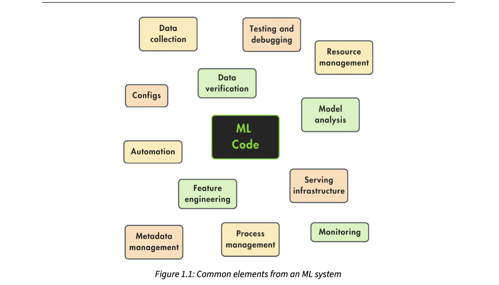
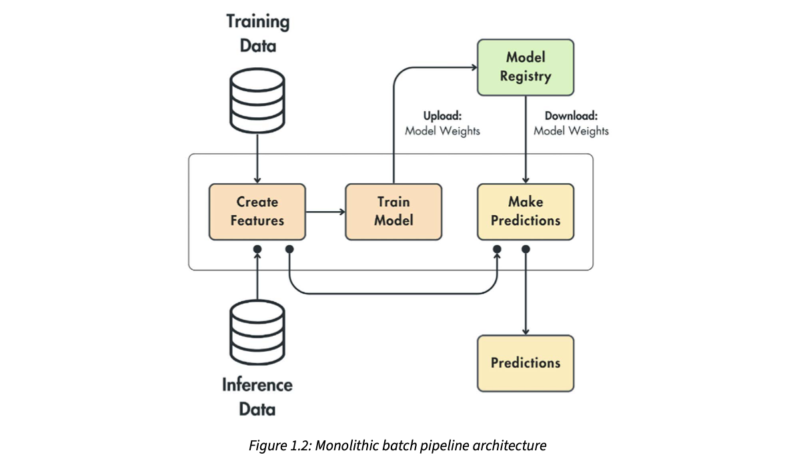
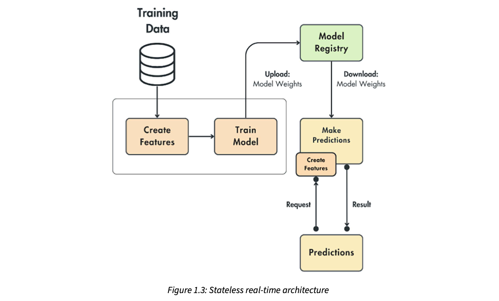
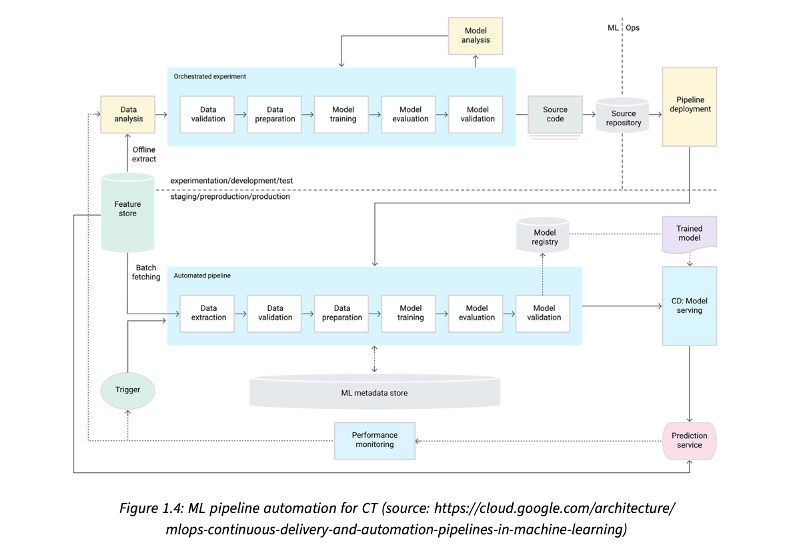
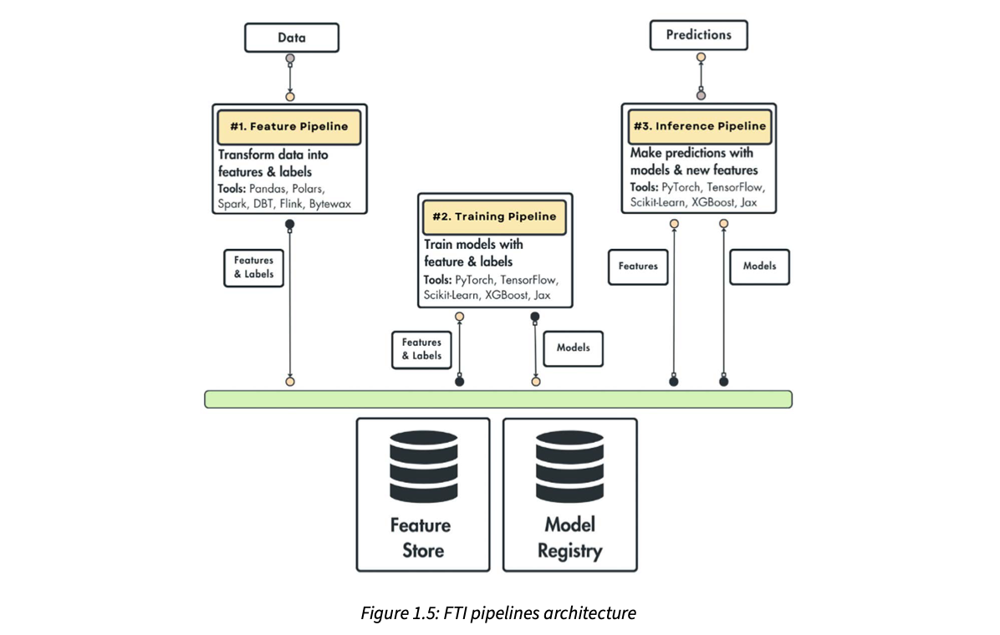

The LLM Twin: what we are building, the smallest useful version of it, and the three-pipeline blueprint behind it
The whole book builds one product end to end: an LLM Twin, an AI character that writes like you because it has been fine-tuned on your own posts, articles and code, and helped by RAG (retrieval-augmented generation) over your old content. This chapter does the planning before any code. First the "why": what a twin is, why it beats pasting prompts into ChatGPT, and why it is ethical if it uses only your own data. Then the "what": an MVP (minimum viable product) scoped for a team of three with laptops and personal money. Then the "how": the FTI (feature / training / inference) pattern, which shrinks a messy ML system into three pipelines that only talk through a feature store and a model registry. Finally the authors apply FTI to the twin, adding a fourth data collection pipeline, and explain each part's job, its hardware and how it scales.
How the chapter fits together
read this firstThe chapter follows the three planning steps the authors say every new product needs: dream about why, cut it down to what you can really build, then design how. Each row reacts to the row above it. Orange boxes are the key ideas.
The book's promise, and the three planning steps before any code
The authors open with what the whole book will do: walk you through building an end-to-end LLM product (LLM = large language model). Their belief is that you learn LLMs and production ML (machine learning that runs for real users, not just in a notebook) best by actually building a system.
The product is an LLM Twin: an AI character that learns to write like one particular person by putting that person's style, voice and personality into an LLM. Using this one example, the book covers the complete ML life cycle, from gathering data all the way to deployment and monitoring. Most of what you learn while building the twin carries over to other LLM or ML applications.
Before writing code, an engineer goes through three planning steps:
- Understand the problem and the vision ("Why"). What exactly is an LLM Twin and why build it? This is the step where you are allowed to dream.
- Design a first iteration with minimum features ("What"). To mimic a real project, you define only the core features needed for a product that works and is valuable. The choices depend on the timeline, the resources and what the team knows. This step connects the dream to what is realistic and answers "What are we going to build?"
- System design ("How"). Lay out the core architecture and the design choices for the LLM system.
Steps 1 and 2 are mainly product work; step 3 is technical. The authors stress that even though the first two need little ML knowledge, skipping them means you build without a clear vision. These three steps happen naturally in any real product.
The chapter's four topics map onto those steps:
By the end you should have a clear picture of everything the rest of the book will build.
Step through the three planning steps
Opening a chai stall. Why: office workers near the metro station have nowhere to get good chai at 8 a.m. What: on day one you sell only masala chai and two kinds of biscuits from one cart, not a full café menu. How: where the gas cylinder sits, who buys milk, how you take UPI payments. Where it breaks: a chai stall's "how" is simple and stable; a software ML system's "how" keeps changing as data and models change, which is why the book spends so much time on a flexible architecture.
The order matters because each step limits the next. The "why" decides which users and outputs matter. The "what" turns that into a short list of features that a small team can finish. Only then can the "how" be sized correctly: you design for the features you chose, not for every feature you can imagine. Engineers who jump to step 3 tend to over-build infrastructure for problems nobody has yet.
"Walk me through how you'd start a new LLM feature." A crisp answer: "First I pin down the problem and who it is for, then I cut scope to an MVP that is still end-to-end usable given team size, time and budget, and only then I design the architecture around clear component interfaces." In a founding-engineer story (for example a realtime voice agent), say what you deliberately left out of v1 and why.
- The MVP step in detail: 08 What is an MVP? and 09 Defining the LLM Twin MVP.
- The "how": 13 FTI pipelines and 20 the four components.
- Chip Huyen's take on when to build an AI application at all: AI Engineering ch.1.
Understanding the LLM Twin concept
The first step is a clear vision of what we want to create and why it is worth building. The authors point out that the LLM Twin idea is new, so before the technical details you need a feel for three things: what it is, what to expect from it, and how it should work.
Their argument for doing this first: if you have a solid intuition for the end goal, the theory, code and infrastructure in later chapters become much easier to digest, because you always know which part of the final product each piece serves.
Seeing the finished photo of a dish before you start a long recipe. Every step (soak the dal, temper the spices) makes sense because you know what you are aiming for. Where it breaks: a recipe photo is fixed; the twin's "finished product" is itself defined in the next plates, and gets narrowed down later by the MVP.
- The definition itself: 03 What is an LLM Twin?
- The preface's outline of the book: ch00_preface.html
What is an LLM Twin?
An LLM Twin is an AI character that carries your writing style, voice and personality inside an LLM (a large, complex AI model). Think of it as a digital version of you, projected into an LLM.
- Generic LLM vs twin. A normal LLM is trained on the whole internet. A twin is fine-tuned on you (fine-tuning = continuing to train an already-trained model on a smaller, specific dataset). Because a model mirrors its training data, the twin picks up your style, voice and personality.
- Why the word "projected". The authors chose it on purpose. Like any projection (a 3D object casting a 2D shadow), a lot of information is lost. So the twin is not you; it copies only the side of you that shows up in the data it saw.
- A model reflects its data. Feed it Shakespeare and it writes like Shakespeare; train it on Billie Eilish and it writes songs in her style. This is called style transfer.
- Style transfer in images. The same idea is common in image generation, for example drawing a cat in Van Gogh's style. The twin does style transfer too, but the "style" is your own persona instead of a famous artist's.
- Fine-tuning + RAG. Besides fine-tuning, the twin uses several advanced RAG (retrieval-augmented generation) techniques. RAG means: before generating, look up relevant stored pieces of your past content and put them in the prompt. The book says this conditions the autoregressive process (the model writes one token at a time, each based on the ones before) with earlier embeddings of you (embeddings = number vectors that capture the meaning of a text).
Where the details live, as this page of the book says: fine-tuning in Chapter 5, RAG in Chapters 4 and 9. (Later, on pdf p40, the book points to Chapters 8 and 9 for RAG; the RAG feature pipeline is Chapter 4 and the RAG inference pipeline is Chapter 9 in this book's table of contents.)
Examples of what you could fine-tune on to get different twins:
| Your data | What the twin becomes good at |
|---|---|
| LinkedIn posts and X (Twitter) threads | Writing social media content |
| Messages with friends and family | An "unfiltered" version of you |
| Academic papers and articles | Formal, educational writing |
| Code | Implementing code the way you would |
All four reduce to one strategy: collect your digital data (or part of it) and feed it to an LLM with different algorithms. The LLM ends up reflecting the voice and style of whatever you collected. "Easy, right?", the authors ask, and then list why it is not:
- How do we get access to this data?
- Do we even have enough digital data to project ourselves into an LLM?
- Which kinds of data are actually valuable?
- Is it OK to do this at all?
- Do we want a copycat of ourselves?
- Will it write with our voice and personality, or only try to imitate it?
The authors remind you that this section is about the "Why", not the "What" or "How": why a twin makes sense, why it is valuable, and why it is morally fine if the problem is framed correctly (answered in plates 04–05).
Try it: pick the data, see which twin you get
Tick the data sources you would feed in. The readout says what kind of twin that data produces (from the book's four scenarios) and what it would be bad at. The "share of you" bar is modelled (our toy weights), just to show the projection idea: every source covers only part of you.
A mimicry artist on a comedy show who has studied only a cricket commentator's broadcasts. He nails the commentary voice and catchphrases, but ask him what that commentator says at a family dinner and he has nothing: he only saw the "broadcast side". That is the projection. Where it breaks: a mimic understands what he is copying; an LLM learns statistical patterns in text and can confidently produce things the real person would never say.
Two levers shape the twin. Fine-tuning changes the model's weights, so the style becomes the model's default way of writing. RAG does not change weights: at request time it fetches pieces of your old content (found by comparing embeddings) and puts them into the prompt, so the model can reuse your facts, phrases and references. Fine-tuning gives the voice; RAG gives the memory. That split is why the later architecture keeps two copies of the data: cleaned text for fine-tuning and embedded chunks for RAG (plate 22).
You give the twin a skeleton: "post about why we moved our voice agent from REST polling to WebSockets". RAG finds two of your old posts that mention latency budgets and pulls a phrase you like using. The fine-tuned model writes the post with your usual short sentences and closing question. If you had trained only on formal papers, the same request would come out as an essay with section headings, the wrong voice for LinkedIn.
"Fine-tuning or RAG for personalisation?" Say: "They solve different things. Fine-tuning bakes in style and format, which is stable; RAG injects facts that change or need citing, at request time and without retraining. A twin uses both: fine-tune on my writing for voice, retrieve my past posts for content." For RAG memory work, mention that retrieval also gives you traceability (you can show which document was used).
- Fine-tuning in this book: ch05, ch06. RAG: ch04, ch09.
- What embeddings are: Hands-On LLMs ch.2. RAG basics: Hands-On LLMs ch.8, AI Engineering ch.6.
- Fine-tuning a generator on your own data: Hands-On LLMs ch.12, AI Engineering ch.7.
Why building an LLM Twin matters
The authors' reasoning, step by step:
- A personal brand beats a CV. For an engineer (or any professional), building a personal brand is worth more than a standard CV.
- But content takes time. Writing on LinkedIn, X or Medium is slow. Even if you enjoy writing, you eventually run out of inspiration or time and want help.
- So the scope is clear. They say they don't want to turn this into a sales pitch, but the product's scope must be clear: the twin writes personalised content for LinkedIn, X, Instagram, Substack and Medium (or other blogs) in your style and voice.
- It's a co-pilot, not a ghost. It will not be used for immoral purposes. It acts as your writing co-pilot. You can adapt it creatively to other uses, but the book focuses on one niche: social media content and articles.
- You give the skeleton, it does the grunt work. Instead of writing from scratch, you hand the twin the bones of your main idea and it does the heavy lifting.
- You still review. In the end you must check that everything is correct and format it the way you like (concrete features come in the MVP section).
- It is specialised. Since the LLM is specialised for content writing through fine-tuning, prompt engineering and RAG, it will probably fail if you use it for a different kind of task.
So the twin helps you do three things:
The co-pilot loop (step through)
A good junior at a CA (chartered accountant) firm who has read all your past client letters. You tell them "reply to Sharma-ji about the GST notice, polite but firm, mention last year's ruling", and they bring back a draft that sounds like you. You still read and sign it. Where it breaks: the junior would refuse to draft something they know is wrong; the twin can produce a confident, wrong draft, which is why step 3 (review) never goes away.
The narrow scope is a design decision, not a weakness. Specialising (fine-tune on your posts, prompts built for posts, retrieval over your posts) makes the twin much better at one job and worse at others. The authors accept that trade-off openly: a content twin used for, say, legal advice would likely fail.
"Why build a specialised model instead of using a general one?" Answer: "A specialised system wins on the narrow task (style, format, domain facts) and is cheaper to run, but it fails outside its niche, so the product must keep users inside that niche." Keeping a human review step is the standard safety net for generated content.
- 06 Why not ChatGPT? for the comparison with a general chatbot.
- Prompt engineering: Hands-On LLMs ch.6, AI Engineering ch.5.
What's the difference between a co-pilot and an LLM Twin? Is it moral?
The book separates two ideas that people often mix up. They are different, but they combine well:
Put them together and you get the book's product: a writing and content-creation assistant that writes like you is your LLM Twin co-pilot.
Why the authors say it is moral
- The LLM is fine-tuned only on your own personal digital data.
- It will not collect or use other people's data to impersonate anyone.
- The goal is narrow and clear: your personalised writing copycat.
- Everyone gets their own twin, with restricted access.
- Caveat: there are many security concerns, but the authors leave them out because they "could be a book in itself".
A rubber stamp of your own signature. Using it on your own letters saves time and is fine. Making a stamp of your neighbour's signature is forgery. Keeping your stamp locked in your drawer is the "restricted access" part. Where it breaks: a stamp reproduces exactly; a twin generates new text, so even with your own data it can say things you never meant, which is still your responsibility once you publish.
The ethical line is drawn at the data: whose data trains the model and who can use the result. That is also an engineering requirement: the crawler later must only touch your own accounts (plate 21), and the deployed twin should be access-controlled per user.
"How would you handle privacy in a personalised LLM?" Answer: "Consent and scope first: train and retrieve only on the user's own data, isolate each user's data and model or index, and restrict access. Then log prompts and outputs for audit." In RAG memory systems the same rule shows up as per-user namespaces in the vector store.
- 21 Data collection pipeline (crawl only your own accounts).
- Responsible LLM use: Hands-On LLMs ch.1.
Why not use ChatGPT (or a similar chatbot)?
The book limits this comparison to one use: generating personalised content.
The short answer, which the authors say they already gave: ChatGPT is not personalised to your writing style and voice. Its output is generic, unarticulated and wordy. For a personal brand, keeping an original voice is critical for long-term success, so using ChatGPT or Gemini directly won't give the best results.
Even if you don't mind content that doesn't sound like you, using ChatGPT "mindlessly" brings two more problems:
- Misinformation from hallucination. (Hallucination = the model states false things confidently.) Checking every result by hand, or with third-party evaluation tools, is tedious and unproductive.
- Tedious manual prompting. You must write prompts and paste in outside information yourself every time. Results are hard to reproduce across sessions because you don't fully control the prompts and the injected data. An API plus a tool like LangChain fixes part of this, but needs programming skills.
From the authors' experience: if you want high-quality content that gives real value, you will spend more time debugging the generated text than writing it yourself.
The real value of an LLM Twin lies in five things:
- What data we collect
- How we preprocess it
- How we feed it into the LLM
- How we chain multiple prompts to get the result we want
- How we evaluate the generated content
The LLM itself matters, but ChatGPT's web interface is very clumsy for managing and injecting many data sources and for evaluating outputs. The answer is to build an LLM system that wraps and automates all these steps, because repeating them by hand every time is not sustainable:
An important nuance: the authors never said not to use OpenAI's GPT API. Their framework is LLM-agnostic: any model you can control from code and that exposes a fine-tuning interface can be plugged in. Their general rule for successful ML products: be data-centric and keep the architecture model-agnostic, so you can quickly try many models on your own data.
Compare: one post, two workflows
Toggle to see the steps a human repeats with a chat UI versus what the LLM system automates. Minutes are modelled (illustrative), not from the book.
Ordering from a new restaurant every day and explaining each time "less oil, no onion, extra green chilli, like my mother makes it" versus a tiffin service that already knows your preferences and has your past orders on file. Where it breaks: the tiffin service is a person who remembers; an LLM system "remembers" only because you engineered data storage, retrieval and prompts around it.
A chat UI makes the human the pipeline: you are the data loader, the prompt template and the evaluator. Each of those steps has no version, no log and no test, so results drift between sessions. Turning them into code makes them repeatable, measurable and swappable. "Model-agnostic" follows naturally: if the model is just one step behind an interface, changing GPT for Llama or Mistral is a config change, while your data and pipelines (the real asset) stay.
"Why not just call GPT?" Answer: "You can, behind an interface. The product value is in the data pipeline, retrieval, prompt chaining and evaluation; the model is a replaceable part. I'd keep the system model-agnostic so I can A/B different providers or open models on my own eval set." This is exactly how an LLM gateway works: one internal API, many interchangeable model backends.
- Hallucination and evaluation: ch07 Evaluating LLMs, AI Engineering ch.3.
- Prompt chaining: Hands-On LLMs ch.7 (LangChain).
- The system that automates the steps: 20 four components.
Planning the MVP of the LLM Twin product
Now that the "what is it" and "why" are settled, the next job is to define the product's features. The book builds only the first iteration, usually called the MVP (minimum viable product), because that is the natural cycle of most products.
The main goal at this stage: line up your ideas with business objectives that are realistic and doable with the resources you actually have. The authors add that even as an engineer, as you take on more responsibility you will go through these steps yourself, bridging what the business needs and what can actually be built.
Planning a family trip with a fixed budget and one week of leave. Everyone wants Kashmir, Goa and Kerala; you pick one place you can do properly. Where it breaks: a trip ends; an MVP is the start of a product that should keep growing, so you also pick things that are easy to extend later.
Senior or founding-engineer interviews often test this: "You have 6 weeks and 2 engineers; what do you ship?" Show you can translate a business goal into a minimal, end-to-end slice and name what you deliberately postpone.
What is an MVP?
An MVP is a version of a product with just enough features to attract early users and test whether the product idea works, early in development. Its usual purpose is to learn from the market with minimal effort.
Why it is a powerful strategy, four reasons:
The authors insist on the "V" (viable). Even a minimal product must give an end-to-end user journey with no half-built features. It must work, have a good user experience, and be something people love and keep using to watch it grow into its full potential.
Minimal vs viable: which slice is an MVP?
Each row is one way to cut a first version of the twin. Click a row to see whether it passes the book's "viable" test (a full user journey, nothing half-built).
A new dosa cart. A "minimal but not viable" first day is serving batter with no chutney because the chutney grinder isn't ready. A viable MVP is one plain dosa with one chutney and sambar, served hot and fast: small menu, complete meal. Where it breaks: food customers forgive a small menu easily; software users may expect more polish, so "good user experience" is part of viable.
Validation only works if users can actually finish the journey. A half-built feature gives you no signal (people drop off because it is broken, not because the idea is bad). That is why the MVP is a thin vertical slice through all layers, not one perfect layer.
"Minimal" is about scope, "viable" is about completeness. A good line: "I'd rather ship one end-to-end flow that works well than three flows that each stop halfway, because only the complete flow tells us whether users want it."
Defining the LLM Twin MVP
A thought experiment: forget the book and imagine building a real product. What resources would you have? Not many:
- A team of three: two ML engineers and one ML researcher
- Their laptops
- Personal funding for compute, such as training LLMs
- Their enthusiasm
That is the reality for most start-ups at the beginning. So the MVP must be chosen strategically. The goal: maximise the product's value relative to the effort and resources put in.
The features of the twin's MVP:
- Collect data from your LinkedIn, Medium, Substack and GitHub profiles.
- Fine-tune an open-source LLM on the collected data.
- Fill a vector database (vector DB: a database that stores embeddings and finds the most similar ones fast) with your digital data, for RAG.
- Create LinkedIn posts using:
- user prompts,
- RAG, to reuse and reference your old content,
- new posts, articles or papers as extra knowledge for the LLM.
- A simple web interface to talk to the twin, where you can:
- configure your social media links and trigger the collection step,
- send prompts or links to external resources.
That is the whole MVP. It may not sound like much, but the system must still be cost-effective, scalable and modular. The authors add a note: even while building only these core features, they use the latest LLM research and best software engineering and MLOps practices (MLOps = the practices for running ML in production: automation, versioning, monitoring). The aim is to show how to engineer a cost-effective, scalable LLM application.
Up to here the twin was seen from the user's and the business's view. The last step is the engineering view: a development plan for solving it technically. From here on, the book is about implementation.
Simulator: fit an MVP into a 3-person budget
Tick features to include. Effort points, the team budget and value scores are modelled (made up to illustrate the trade-off), not from the book. The checker also tells you whether the user journey is still complete (the "V" from plate 08). Teal-bordered chips are the book's MVP features.
A small kirana shop opening in a new colony. With little capital, the owner stocks rice, dal, oil, milk and biscuits (what most people need every day), takes UPI, and lets regulars order on WhatsApp. No frozen section, no home-delivery app. Small, but a customer can complete their daily shopping. Where it breaks: the shop can add a shelf any day; adding a feature to a badly structured software system can mean rewriting it, which is why the twin's MVP is built "modular" from day one.
Every MVP feature maps to one part of the future architecture: data collection → the data collection pipeline; fine-tuning → the training pipeline; filling the vector DB → the feature pipeline; generating posts with RAG → the inference pipeline; the web UI → the client of the inference REST API. So the MVP already touches every pipeline once, end to end, which is exactly the "viable" requirement. What is left out (other platforms like X or Instagram, other content types) can be added later by plugging into the same pipelines.
The UI flow for one user: (1) paste LinkedIn, Medium, Substack and GitHub URLs and click "collect"; (2) later, type "write a LinkedIn post about our new caching layer" and paste a link to a new article as extra knowledge; (3) the twin retrieves two of your old related posts, reads the link's content, and writes the draft in your style. Every MVP bullet is used once in that flow.
"How did you scope v1?" Use the book's frame: list your real resources (people, hardware, money), state the goal as value per unit of effort, then name the smallest feature set that is still end-to-end. Mention you designed it modular so new sources or outputs can be added without rewrites.
- The technical version of this list: 19 technical details.
- How each feature becomes a pipeline: 20 four components.
- The tools picked to stay cheap: ch02 Tooling and Installation.
Building ML systems with feature/training/inference pipelines
Before the specifics of the twin's architecture, the book introduces the pattern at its core: the feature/training/inference (FTI) architecture. This section gives a general overview of the FTI pipeline design and how it can give structure to any ML application. After that, the book applies it to the twin.
The section's path: the problem (an ML system is much more than a model) → why older designs fall short → the FTI solution → its three pipelines → benefits.
Before designing your own house, you learn the standard idea that every house has a kitchen, bedrooms and a bathroom joined by corridors. You still customise, but the template tells you what must exist. Where it breaks: rooms are fixed; FTI's "rooms" can each be split into many services, as plate 17 explains.
- MLOps in full: ch11 MLOps and LLMOps, Appendix: MLOps principles.
The problem with building ML systems
A production-ready ML system is much more than training a model. From an engineering point of view, training is usually the simplest step. Training does get hard when you must choose the right model architecture and hyperparameters (settings chosen before training, like learning rate), but the authors call that a research problem, not an engineering one.
Their focus is designing a production-ready architecture. A highly accurate model is valuable, but if you only train it on a static dataset, you are far from deploying it robustly. You also have to think about how to:
- Ingest, clean and validate fresh data
- Handle training versus inference setups (they are different environments)
- Compute and serve features in the right environment
- Serve the model cost-effectively
- Version, track and share datasets and models
- Monitor the infrastructure and the models
- Deploy the model on scalable infrastructure
- Automate deployments and training
These are the problems an ML or MLOps engineer handles, while a research or data science team is often responsible for training the model.

How to read this figure. The dark box in the middle, ML Code, is the model code: the part most tutorials teach. Around it float the other components that, according to the Google Cloud team, a mature ML and MLOps system needs: configuration, automation, data collection, data verification, testing and debugging, resource management, model analysis, process and metadata management, serving infrastructure and monitoring (the figure also shows feature engineering). The boxes are not connected on purpose: the point is how many pieces there are, not how they link. The model is one small box among many.
That raises the key question: how do we connect all these parts into one consistent system? We need a boilerplate (a standard template) for designing ML systems.
Classic software already has one. Zoom out on most applications and they split into three layers: a database, business logic and a UI. Each layer can be as complex as needed, but the high-level shape is always those three. Is there something similar for ML? The first step is to look at earlier solutions and why they don't scale.
Click a box: which part of the system owns it?
The figure's boxes, mapped to where they end up in the FTI design later in this chapter (our mapping, built from plates 14–25; the book does not draw this mapping).
A wedding. The couple (the model) is at the centre of the photo, but the event only works because of caterers, decorators, the pandit, the sound system, the guest list, parking and the person collecting envelopes. Hire a great couple and nothing else, and there is no wedding. Where it breaks: wedding vendors work once; ML components run continuously and must hand data to each other again and again, which is why they need clear interfaces.
Models need data that keeps changing, an environment to run in, and someone watching whether they still work. Each need creates a component. Without a structure, every component talks to every other one and the system becomes a tangle. The DB / business logic / UI split works in classic software because each layer has one job and a narrow interface; the book is about to look for the ML equivalent.
"What's hard about putting ML in production?" Answer: "The model is a small part. The hard parts are fresh data ingestion and validation, keeping training and serving features consistent, versioning data and models, cost-effective serving, monitoring for drift, and automating retraining and deployment." That list is a strong answer on its own.
- Monitoring and automation: ch11.
- Chip Huyen on the AI engineering stack: AI Engineering ch.1, ch.10.
The issue with previous solutions
Design 1: the monolithic batch pipeline
Most ML applications use a monolithic batch architecture: feature creation, model training and inference are all inside one component (monolithic = one big block; batch = runs on a schedule over a pile of data, not per request).
This quickly solves one critical ML problem: training-serving skew. Skew happens when the features given to the model are computed differently at training time and at inference time. In the monolith, both use the same code, so skew is solved by default. The pattern works fine for small data: the pipeline runs on a schedule in batch mode and a third-party app, like a dashboard, reads the predictions.

How to read this figure. The big rounded rectangle is the single component. Inside it, left to right: Create Features → Train Model → Make Predictions. Two databases feed the same Create Features box: Training Data from the top and Inference Data from the bottom. The curved line from Create Features to Make Predictions shows the same feature code feeding prediction, which is why there is no skew. Train Model uploads model weights to a Model Registry; Make Predictions downloads them back, then writes to Predictions (a store a dashboard would read).
But the monolith creates other problems:
- Features are not reusable, either by your own system or by others.
- If data grows, you must refactor the whole codebase to use something like PySpark or Ray (distributed computing frameworks).
- It is hard to rewrite the prediction module in a faster language such as C++, Java or Rust.
- It is hard to split the work between teams across features, training and prediction.
- It is impossible to switch to streaming for real-time training.
Demo: how training-serving skew sneaks in
One feature: "average post length in words over the user's last posts". The training job and the serving code each implement it. Pick a design and see the feature value the model gets at training vs at serving for the same user. The posts and the bug are modelled.
Design 2: the stateless real-time architecture
Figure 1.3 shows the real-time version. It has the same issues as above, plus a new one: to make a prediction, the whole state must travel inside the client's request, so the features can be computed and passed to the model.
- Movie recommendation example. Instead of sending just the user ID, the client must send the entire user state: name, age, gender, movie history and more. This is error-prone: the client must know how to get that state, and it becomes tightly coupled to the model service.
- LLM + RAG example. The documents you add as context to a query are external state. Without storing them in a vector DB, you would have to send them along with the user query, so the client would need to know how to search and fetch the documents, which is not feasible.
The authors call it an antipattern for the client application to know how to access or compute features. (The book says RAG is explained in detail in Chapters 8 and 9 here.)

How to read this figure. Training now lives in its own box (Create Features → Train Model), uploading weights to the Model Registry. Serving is a separate Make Predictions service that downloads the weights. Look at the small Create Features box stuck on the side of Make Predictions: feature computation is duplicated inside the serving service, and it can only work from what arrives in the Request arrow. The service is stateless (it stores nothing), so everything it needs must be in the request; it sends back a Result.
So the core problem is: how do we get the features to make a prediction without the client passing them in? For the movie example: how can we recommend using only the user's ID? The book asks you to keep these questions in mind; FTI answers them.
Compare the request: stateless vs feature store
Design 3: Google Cloud's production architecture
At the other end of the spectrum, Google Cloud provides a production-ready architecture (Figure 1.4). It works, but it is very complex and not intuitive. Unless you have a lot of experience deploying and maintaining ML models in production, it is hard to understand. It is also not obvious how to start small and grow the system over time.

How to read this figure. A dashed horizontal line splits it into experimentation/development/test (top) and staging/preproduction/production (bottom). Top: data analysis feeds an orchestrated experiment (data validation → data preparation → model training → model evaluation → model validation), with model analysis looping back; the result is source code pushed to a source repository and then to pipeline deployment. Bottom: the deployed automated pipeline repeats the same steps (plus data extraction) on fresh data fetched in batches from the feature store, writes to the model registry and an ML metadata store, and feeds CD: model serving → prediction service. Performance monitoring watches predictions and can fire a trigger that restarts the automated pipeline: that loop is CT (continuous training). Count the boxes: about 20 moving pieces, which is the number FTI will reduce to three.
This is where FTI comes in: the next section solves these issues with an intuitive design.
Monolith: a one-person dhaba where the cook buys vegetables, cooks and serves. No miscommunication, but it can't grow past ten tables. Stateless real-time: a restaurant where each customer must bring their own spice mix and recipe card, because the kitchen keeps nothing. Google's design: a five-star hotel kitchen manual, correct but overwhelming for someone opening a small restaurant. Where it breaks: kitchens don't suffer "skew" the way ML does: a cook tasting food notices a mistake, while a model silently accepts wrongly computed features.
Skew is dangerous because nothing crashes: the model just gets numbers on a slightly different scale or meaning than it learned and makes worse predictions. Sharing code (monolith) avoids it but couples everything. Splitting services (real-time) decouples them but duplicates feature logic and pushes state onto the client. The way out is to compute features once, store them with versions, and let every consumer read the same stored values by key. That is the feature store in FTI.
"What is training-serving skew and how do you prevent it?" Answer: "Features computed differently in training and serving, for example different code, different time windows or different preprocessing. Prevent it by computing features in one pipeline, storing them versioned in a feature store, and having both training and inference read from it; then monitor the feature distributions at serving." For RAG: the same idea means using the same chunking and embedding model at indexing and at query time.
- The fix: 13 FTI, 14 feature store.
- Same embedding model at index and query time: ch04, ch09.
- CT/CD in detail: ch11.
The solution: ML pipelines for ML systems
The solution is a clear, simple mind map that any team or person can follow to compute features, train the model and make predictions. Those three steps are needed by every ML system, so the pattern is named after them: the FTI pipeline.
The claim: any ML system can be reduced to three pipelines: feature, training and inference. This mirrors the DB / business logic / UI layers of classic software (plate 11). Why it is powerful:
- You can clearly define each pipeline's scope and interface (what it takes in and what it gives out).
- It is easier to see how the three parts interact.
- You work with 3 moving pieces instead of ~20 (as in Figure 1.4), which is much easier to define and handle.

How to read this figure. Three boxes, left to right. #1 Feature Pipeline takes Data from the top and sends Features & Labels down. #2 Training Pipeline pulls Features & Labels up and pushes Models down. #3 Inference Pipeline pulls both Features and Models up and emits Predictions at the top. The green horizontal bar is the shared storage layer, sitting on two stores: the Feature Store and the Model Registry. No arrow goes directly from one pipeline to another: they only meet through storage. Each box also lists example tools: feature pipeline Pandas, Polars, Spark, DBT, Flink, Bytewax; training and inference PyTorch, TensorFlow, Scikit-Learn, XGBoost, Jax. Different tools per box is the point: each pipeline picks its own stack.
One more key point before the details: each pipeline is a separate component that can run in a different process or on different hardware. So each can use a different technology, be built by a different team, or be scaled differently. The design bends to your team's needs; it works as a mind map for structuring your architecture.
Step through FTI: who writes, who reads
Indian Railways reservations. One team prepares the chart (feature pipeline writing to a shared record), another trains TTEs on the rules (training), and the TTE on the train checks your seat using the chart and his training (inference). The TTE never phones the chart-making team; he just reads the printed chart. Where it breaks: a railway chart is printed once per journey; a feature store is updated continuously and keeps old versions too.
The trick is that storage is the contract. Because pipelines exchange data only through the feature store and the model registry, each pipeline's internals are hidden. This is the same reason microservices talk over well-defined APIs or a message queue: you can rewrite one side without touching the other, as long as the stored format and versions are respected.
"Explain the FTI pattern in 30 seconds." Answer: "Three independent pipelines. Feature: raw data in, features and labels out to a feature store. Training: features from the store in, model out to a model registry. Inference: features plus model in, predictions out. They never call each other directly, so each can have its own stack, team, schedule and scaling."
- Each pipeline: 14 · 15 · 16.
- Jim Dowling's article that inspired this section: see References.
The feature pipeline
- Input: raw data. Work: process it. Output: the features and labels the model needs for training or inference (features = the input values a model uses; labels = the correct answers it learns from).
- It does not hand them to the model directly. Instead it stores them in a feature store, whose job is to store, version, track and share features.
- Because features are saved, we always have a state of our features, so we can easily send them to the training and inference pipelines.
- Because the data is versioned, we can always make sure training-time and inference-time features match. That avoids training-serving skew (plate 12).
Back to the movie recommender. The feature pipeline runs every night: it reads watch logs and writes, per user ID, favourite_genre, avg_rating and watched_last_7d to the feature store as version v3. The training job reads v3 for all users; the serving API, given only user_id=42, reads the same v3 row. That answers the book's question from plate 12: predict from the ID alone.
A school's report-card office. Teachers' raw marks come in; the office computes percentages and grades and files them in a register by roll number. The scholarship committee and the parent-teacher meeting both read the same register, so nobody computes a different percentage. Where it breaks: a register is rarely re-versioned; a feature store keeps every version so you can retrain on exactly the old one.
The feature store is two things at once: a historical store (all versions, good for training on large batches) and a fast lookup by key (good for serving one request). Versioning turns "features" into a reproducible dataset: "model trained on features v3" means something exact.
"What does a feature store give you?" Answer: "One place where features are computed once and stored with versions, so training and serving use identical values, features are reusable across models and teams, and the client only sends an ID." In an LLM system the vector DB of embedded chunks plays this role for RAG.
- The twin's version: 22 feature pipeline + logical feature store, built in ch04.
The training pipeline
- Input: features and labels from the feature store. Output: a trained model, or several.
- Models are stored in a model registry. It plays the same role as the feature store, but now the model is the first-class citizen: the registry stores, versions, tracks and shares models with the inference pipeline.
- Most modern registries include a metadata store where you record important facts about how a model was trained. The most important: which features, labels and their versions were used. So you always know what data a model was trained on.
| A registry entry (modelled example) | Why it matters |
|---|---|
model: twin-llm v2 | The version the inference pipeline asks for |
trained_on: instruct-dataset v5 | Lineage: you can rebuild or audit it |
hyperparameters: lr=2e-4, epochs=3 | Reproducibility |
eval: passed test suite on 2026-11-01 | Gate for deployment |
A pharmacy that keeps each medicine batch with its batch number, manufacturing date and the ingredient lots used. If a batch has a problem, you know exactly what went into it. Where it breaks: a medicine batch is never "rolled back to"; with models you often redeploy an older version.
Metadata creates lineage: model → dataset version → raw data. When a model behaves badly, lineage lets you ask "was it the data or the training?" and reproduce the exact run. Without it, a model file is an unexplained blob of weights.
"What goes in a model registry besides the weights?" Answer: "Version, the dataset version and features it was trained on, hyperparameters, evaluation results and stage (candidate, accepted, production), so you have lineage, reproducibility and safe rollback."
- The twin's version: 23 training pipeline. Model registry and experiment tracking tools: ch02.
The inference pipeline
- Input: features and labels from the feature store plus the trained model from the model registry. With these two it makes predictions in batch or real-time mode.
- What happens to predictions is up to you: in a batch system they probably go into a DB; in a real-time system they are served to the client that asked.
- Because features, labels and models are all versioned, you can easily upgrade or roll back a model deployment. The book's example: you always know model v1 uses features F1, F2, F3 and model v2 uses F2, F3, F4, so you can quickly change which model is wired to which features.
Try it: deploy and roll back with versioned features
The book's example. Pick which model version is live; the inference pipeline fetches exactly the features that version was trained on. Then "break" a feature and roll back.
A phone app on the Play Store. Version 2 crashes for some users, so the developer pushes version 1 back. That only works because the old APK is stored and everyone knows which server API version it needs. Where it breaks: phone apps rarely depend on a separate stored "feature" dataset; a model rollback must also bring back the matching features.
The registry's metadata records which feature versions a model needs. Inference reads that list and fetches those exact features. So switching models is changing one pointer, not redeploying code. In real-time mode this is usually a small service behind an API; in batch mode it is a scheduled job writing to a table.
"How do you roll back a bad model safely?" Answer: "Keep models and feature versions linked in the registry, deploy by pointing the serving layer at a model version, and roll back by repointing to the previous version and its features. Combine with canary or shadow traffic before full rollout." (Canary/shadow is beyond the book here.)
- The twin's version: 24 inference pipeline, built in ch09 and deployed in ch10.
Benefits of the FTI architecture
The one thing to remember about FTI is its interface:
| Pipeline | Reads | Writes |
|---|---|---|
| Feature | raw data | features + labels → feature store |
| Training | features + labels ← feature store | model → model registry |
| Inference | features ← feature store, model ← model registry | predictions |
However complex your ML system gets, these interfaces stay the same.
The main benefits:
- Only three components, so it is intuitive and easy to understand.
- Each component can use its own tech stack, so you can adapt each to specific needs (big data, streaming) and pick the best tool for each job.
- A clear interface between components means each can be built by a different team if needed, making development more manageable and scalable.
- Every component can be deployed, scaled and monitored independently.
Last point: the system doesn't have to have only three pipelines. Usually it has more. For example:
- The feature pipeline can be a service that computes features plus one that validates data.
- The training pipeline can be a training component plus an evaluation component.
The FTI pipelines are logical layers. Each can be complex and contain many services. What matters is that all of them keep the same interface: they interact only through the feature store and model registries. Then each FTI component can evolve separately, without knowing the others' details and without breaking the system when something changes.
The authors point to Jim Dowling's (CEO and co-founder of Hopsworks) article From MLOps to ML Systems with Feature/Training/Inference Pipelines as the inspiration for this section (see References). Next they apply FTI to the twin.
Try it: swap a pipeline's internals, keep the interface
Pick a pipeline and a new internal tech. The readout shows what other parts had to change. Tool names come from Figure 1.5 and plate 12; the scenario is ours.
A cricket team with batters, bowlers and fielders. The bowling coach can change how bowlers train without asking the batting coach, as long as the bowlers still turn up and bowl in the match. The "interface" is the match itself. Where it breaks: a cricket team shares one captain who decides everything; FTI pipelines have no central decider, only shared storage and an orchestrator that triggers them.
This is the classic software idea of loose coupling through stable contracts. The feature store schema and the registry's model format are the contracts. Inside a layer, you can add a validation service, move from Pandas to Spark, or split training and evaluation, and nothing outside notices. Breaking the contract (changing a feature's meaning without a new version) is what breaks systems.
Your data grows 50× (modelled). In the monolith (plate 12) you must refactor everything to PySpark. In FTI you rewrite only the feature pipeline in Spark; training still reads "features v6" from the store and inference still reads by ID. One team, one pipeline, one change.
"Why split ML into pipelines?" Answer: "Different workloads need different stacks and hardware (CPU batch jobs vs GPU training vs low-latency serving), different teams own them, and they change at different speeds. Fixed interfaces through a feature store and model registry let each evolve and scale independently." Compare it to a backend team's DB / service / API split.
- 25 compute and scaling per pipeline.
- Orchestrators that trigger the pipelines: ch02, ch11.
Designing the system architecture of the LLM Twin
Now the book lists the twin's concrete technical requirements and shows how to meet them by designing the LLM system with FTI.
An important limit for this step: no tools or tech stack yet. The goal is only a high-level architecture that is language-, framework-, platform- and infrastructure-agnostic. The focus is each component's scope, interface and interconnectivity (how the parts connect). Implementation details and the tech stack come in later chapters.
An architect's floor plan before choosing tiles, paint brands or the contractor. You decide where the rooms and doors go; materials come later. Where it breaks: in software, some tool choices (for example a vector DB that can also act as a NoSQL store, plate 22) do feed back into the design.
In a system design interview, start exactly like this: requirements, then components with their responsibilities and interfaces, then data flow, and only then specific technologies. Naming tools too early is a common mistake.
- The tech stack chosen later: ch02 Tooling and Installation.
Listing the technical details of the LLM Twin architecture
So far the twin was described from the user's side. Now the ML system's requirements are stated in purely technical terms, in four groups.
- Collect data from LinkedIn, Medium, Substack and GitHub, fully autonomously and on a schedule.
- Standardise the crawled data and store it in a data warehouse.
- Clean the raw data.
- Create instruct datasets for fine-tuning (pairs of instruction → desired answer).
- Chunk and embed the cleaned data and store the vectors in a vector DB for RAG.
- Fine-tune LLMs of several sizes: 7B, 14B, 30B or 70B parameters (B = billion).
- Fine-tune on instruction datasets of several sizes.
- Switch between LLM types, e.g. Mistral, Llama and GPT.
- Track and compare experiments.
- Test potential production LLM candidates before deploying them.
- Start training automatically when new instruction datasets appear.
- A REST API for clients to talk to the twin.
- Real-time access to the vector DB for RAG.
- Inference with LLMs of various sizes.
- Autoscaling based on user requests.
- Automatically deploy the LLMs that pass evaluation.
- Instruction dataset versioning, lineage and reusability.
- Model versioning, lineage and reusability.
- Experiment tracking.
- CT/CI/CD: continuous training, continuous integration, continuous delivery.
- Prompt and system monitoring.
The book says not to worry if some of these don't make sense yet; each is explained in its own chapter to avoid repetition. The list could be more detailed, but it focuses on core functionality. The real question it leaves: how do we apply FTI to implement all of this?
Click a requirement: which component meets it?
Our mapping from plates 21–25 (the book's answer to "how do we apply FTI?").
A wedding planner's checklist split into catering, decoration, music and logistics. Each line item must belong to exactly one vendor, or it falls through the cracks. Where it breaks: some ML requirements (like versioning) are shared by several pipelines, so they are cross-cutting rather than owned by one.
Requirements are grouped by lifecycle stage (data, training, inference) plus LLMOps, the operational glue across stages. That grouping already hints at the FTI split. Notice the many "automatically" and "on a schedule" items: the system is meant to run without a human pressing buttons, except for one deliberate approval step (plate 23).
"List the non-functional requirements for an LLM app." Use this list: scheduled ingestion, versioned datasets and models with lineage, experiment tracking, evaluation gates before deploy, autoscaling inference behind an API, real-time retrieval, CT/CI/CD, and prompt monitoring.
How to design the LLM Twin architecture using FTI: four components
The system is split into four core components. Why four, when FTI says three? Because along with the feature, training and inference pipelines we also need a data pipeline. Best practice says:
- the data engineering team owns the data pipeline;
- the ML engineering team owns the FTI pipelines.
Since the MVP is built by a small team, they implement all of it: data collection plus FTI. Tackling a problem end to end is common in start-ups that can't afford dedicated teams, so engineers "wear many hats" depending on the product's stage. And in any setup, knowing how a whole ML system works helps you understand other people's work.
![Four boxes. Data Collection Pipeline: Medium, Substack, LinkedIn, GitHub into ETL into a NoSQL DB. Feature Pipeline: articles, posts and code processed into a Logical Feature Store containing a vector DB, a retrieval client and an instruct dataset. Training Pipeline: LLM fine-tuning with experiment tracker and test LLM candidate, writing to a model registry. Deploy of the accepted LLM into the Inference Pipeline: REST API, retrieval client reading RAG data, LLM Twin, sending to prompt and system monitoring.](figs/fig-1-6.png)
How to read this figure. Start top-left. Data Collection Pipeline: Medium, Substack, LinkedIn and GitHub all go into one ETL box, which loads a NoSQL DB. A thick arrow carries that data into the Feature Pipeline (top-right), which processes three lanes: Articles, Posts, Code. Its output, labelled "Data for Fine-tuning & RAG", lands in the dotted Logical Feature Store: a Vector DB, a Retrieval Client reading from it, and an Instruct Dataset. "Fine-tuning Data" flows left into the Training Pipeline: LLM Fine-tuning logs to an Experiment Tracker, and the "LLM Production Candidate" goes to the Model Registry; Test LLM Candidate reads from and writes back to the registry. The registry sends the "Accepted LLM" to Deploy, which feeds the Inference Pipeline (bottom): REST API → Retrieval Client → LLM Twin, with the retrieval client pulling "RAG Data" from the vector DB (dashed line). The twin's activity goes to Prompt & System Monitoring. The legend bottom-right: a request such as "Write a post about…" comes in, a generated post goes out.
Trace it: from crawling to a generated post (step through)
Our simplified redraw of Figure 1.6. Each step highlights the parts involved and says what moves where.
A newspaper. Reporters gather stories from many places into one inbox (data collection). The desk cleans, sorts by section and files them in the archive (feature pipeline). The training school teaches new writers the paper's style from the archive (training). The editor on duty takes a reader's request, pulls related archive clippings and has a trained writer produce the piece (inference). Where it breaks: a newspaper has humans checking each article; the twin's checks are automated tests, plus one human approval only when a new model goes live.
The data pipeline is separated from the feature pipeline because it has a different owner and a different job: making raw data available and standardised, with no ML-specific processing. The feature pipeline then turns it into two ML-ready products: an instruct dataset for training and a vector index for RAG. Training and inference each consume one product. Every arrow crosses a storage boundary (NoSQL DB, logical feature store, model registry), which is what keeps the four parts independent.
"Design an LLM app that writes in a user's voice." Draw this: crawler + ETL into a document DB; a feature pipeline that cleans, chunks and embeds into a vector DB and also builds an instruct dataset; a training pipeline that fine-tunes, tracks experiments and registers candidates behind an evaluation gate; and an inference service with a REST API, a retrieval client, the fine-tuned model and prompt monitoring. Then talk about scaling per component (plate 25).
Data collection pipeline
- Job: crawl your personal data from Medium, Substack, LinkedIn and GitHub.
- Pattern: ETL: extract data from the platforms, standardise (transform) it, and load it into a data warehouse. (The book spells the acronym out as "extract, load, transform"; the usual expansion is extract, transform, load, which also matches the order of steps it describes.)
- Ethics note in the book: the pipeline crawls only your own social media and has no access to other people's. For the book, the authors agreed to make their own collected data available for learning. Using other people's data without consent is not moral.
- Output: a NoSQL DB acting as the data warehouse. Text is naturally unstructured, so NoSQL "fits like a glove".
- Why call MongoDB a "warehouse"? A NoSQL DB like MongoDB is not usually labelled a data warehouse, but here it acts as one because it stores standardised raw data gathered by several ETL pipelines, ready to be fed into an ML system.
The collected data is sorted into three categories:
Why group by category and not by source?
- When you feed an article to the LLM, whether it came from Medium or Substack doesn't matter. You can keep the source URL as metadata for references.
- But for processing, fine-tuning and RAG, the type of data matters a lot, because each category must be processed differently. Example: the chunking strategy for a post, an article and a piece of code look different.
- Grouping by category lets you plug in new platforms easily: X into posts, or GitLab into code. In a modular system you just attach one more ETL to the data collection pipeline and everything else works without code changes.
Try it: plug in a new platform
Add a source. With category-based storage, only a new ETL is needed. Switch to "group by source" to see what would have to change downstream (our illustration of the book's argument).
A dabbawala sorting system. Tiffins are collected from many homes (sources), but at the station they are sorted by destination code, not by which home they came from. A new building on the route just needs one more collector; the sorting and delivery don't change. Where it breaks: tiffins are identical boxes; posts, articles and code really are different and need different processing.
This is the adapter pattern applied to data: each ETL adapts one platform's format to a common schema per category. Downstream code depends only on the category schema, so the number of platforms can grow without touching the feature pipeline. Storing the raw, standardised data first (before any ML processing) also lets you re-run cleaning or chunking later with new logic, without crawling again.
"How would you design ingestion from many content sources?" Answer: "One extractor per source that normalises into a small set of content types with a common schema plus source metadata, loaded into a document store. Downstream processing depends on type, not source, so adding a source is one new extractor." Mention scheduling and only crawling consented data.
- Built in ch03 Data Engineering (crawlers, MongoDB).
- Chunking per content type: ch04; Hands-On LLMs ch.8.
Feature pipeline (in the LLM Twin)
Its role: take raw articles, posts and code from the data warehouse, process them, and load them into the feature store. So far it is pure FTI. What is specific to the twin:
- It processes the three data types differently.
- It has three main steps needed for fine-tuning and RAG: cleaning, chunking and embedding.
- It makes two snapshots of your data: one after cleaning (used for fine-tuning) and one after embedding (used for RAG).
- It uses a logical feature store instead of a specialised feature store product.
The logical feature store
- Any RAG system has a vector DB at its centre. Instead of adding another database (a dedicated feature store), the authors use the vector DB plus some extra logic to provide every feature-store property the system needs.
- A vector DB has no concept of a training dataset, but it can be used as a NoSQL DB: you can fetch data points by their ID and collection name. So you can query it for new data points without any vector search.
- The fetched data is then wrapped into a versioned, tracked and shareable artifact. An artifact is an MLOps concept: a wrapper around data that adds those properties (more in Chapter 2).
- How the rest of the system uses it: the training pipeline uses the instruct datasets as artifacts; the inference pipeline queries the vector DB with vector search for extra context.
Why this is enough here:
- Artifacts work very well for offline uses like training.
- The vector DB is built for online access, which inference needs.
Later chapters explain how each category is cleaned, chunked and embedded. In short: raw article, post or code data comes in, gets processed and lands in a feature store for training and inference. The authors note that trimming away the complexity and keeping only the interface matches FTI perfectly ("Beautiful, right?").
Step through one article: two snapshots
A library that doesn't buy a separate archive building. It uses its main shelves (vector DB) for readers looking things up, and when the training college wants "all books as of this month", the librarian pulls them by catalogue number, boxes them, and stamps the box with a date and batch number (the artifact). Where it breaks: a real archive building would offer more (time-travel queries, point-in-time joins); the logical store gives only what this system needs.
A feature store is defined by its properties (versioned, tracked, shareable, offline batch access, online low-latency access), not by a product name. The vector DB already gives online access and ID-based lookups; artifacts add versioning and tracking for offline use. Fewer databases means less to run and pay for, which matters for a three-person team. The two snapshots exist because fine-tuning wants whole clean documents, while RAG wants small embedded chunks.
Modelled: you have 40 articles, 300 posts and 12 repos. After cleaning, the 352 documents become instruct dataset v1 (artifact). After chunking, they become, say, 2,900 chunks, each with a vector, stored in collections like articles, posts, code. Next week the crawler adds 5 posts: the feature pipeline processes them, the vector DB grows, and a new artifact v2 is created, which triggers training (plate 23).
"Do you need a feature store for an LLM app?" Answer: "You need its properties, not necessarily the product: versioned training datasets for offline use and low-latency retrieval for online use. A vector DB plus versioned dataset artifacts can cover both." This maps well onto RAG memory work: the vector store is your online feature store.
- Artifacts: ch02. Cleaning, chunking, embedding: ch04. Instruct datasets: ch05.
- Chunking and embeddings explained: Hands-On LLMs ch.8, AI Engineering ch.6.
Training pipeline (in the LLM Twin)
It consumes instruct datasets from the feature store, fine-tunes an LLM with them, and stores the tuned LLM weights in a model registry. Concretely: when a new instruct dataset appears in the logical feature store, the training pipeline is triggered, consumes the artifact and fine-tunes the LLM.
Experimentation, then automation
- Experiment phase (data science team owns it at first). Run many experiments to find the best model and hyperparameters, via automatic hyperparameter tuning or by hand.
- Experiment tracker. Log everything useful and compare across experiments to pick the best set of hyperparameters.
- Production candidate. The team picks the best hyperparameters and fine-tuned LLM and proposes it as the LLM production candidate, stored in the model registry.
- Continuous training. Once experimenting is over, the best hyperparameters are stored and reused, removing manual steps. Now training can be fully automated: this is continuous training (CT).
- Testing pipeline. It is triggered for a more detailed analysis than the checks during fine-tuning. Before pushing to production, the candidate is tested against a stricter set of tests to confirm it is better than the model currently in production.
- Accept and deploy. If it passes, the model is tagged as accepted and deployed to the production inference pipeline.
- Manual approval. Even in a fully automated system, the authors recommend a manual step before accepting a new production model, like pressing a red button before a high-consequence action. An expert reads the report generated by the testing component; if it looks good, they approve and automation continues.
The LLM-specific questions this component raises (all answered later in the book):
- How do you build an LLM-agnostic pipeline?
- Which fine-tuning techniques should you use?
- How do you scale fine-tuning across LLMs and datasets of different sizes?
- How do you pick a production candidate from many experiments?
- How do you test the LLM to decide whether to push it to production?
CT with an orchestrator
Because the design is modular, an ML orchestrator (a tool that schedules and triggers pipelines) can schedule and trigger each part. Example: crawl data every week; trigger the feature pipeline when new data lands in the warehouse; trigger the training pipeline when new instruction datasets appear.
Simulator: one week of continuous training
Run the trigger chain. The candidate's score and the production score are modelled (random within a range). The test gate compares them; then you play the expert who approves or rejects.
A new train coach design. Engineers try many prototypes (experiments), the best becomes the candidate, it passes strict RDSO-style trials against the current coach (testing), and a senior officer signs off before it enters passenger service (manual approval). After that, coaches of the approved design roll out of the factory routinely (continuous training). Where it breaks: coach designs change rarely; a twin may get a new candidate every week, so the approval step must be quick to review.
Experimenting and production training are different modes. Experiments explore many settings and need a tracker to compare them. Once settings are fixed, retraining is just "same recipe, new data", which can be automated. The test gate protects production from regressions; the human gate protects against things tests don't catch (an odd tone, a bad sample). Triggers by data arrival (instead of fixed times) keep training aligned with real changes.
"How would you automate retraining safely?" Answer: "Freeze the hyperparameters found in experiments, trigger training on new versioned data via an orchestrator, register each result as a candidate, run a stricter evaluation suite comparing it against production, and require a human approval on the evaluation report before promoting it. Keep the old model for rollback."
- Fine-tuning: ch05, ch06. Testing LLMs: ch07. CT and orchestration: ch11.
- AI Engineering ch.7 Finetuning, ch.4 Evaluate AI systems.
Inference pipeline (in the LLM Twin)
The last piece. It connects to the model registry and the logical feature store:
- It loads a fine-tuned LLM from the model registry.
- From the logical feature store, it uses the vector DB for RAG.
- It receives client requests as queries through a REST API.
- It uses the fine-tuned LLM plus the vector DB to do RAG and answer the queries.
- All client queries, RAG-enriched prompts and generated answers go to a prompt monitoring system to analyse, debug and understand the system better. Depending on requirements, monitoring can trigger alarms so someone acts, manually or automatically.
At the interface level it is pure FTI. Zoomed in, it has parts unique to an LLM + RAG system:
Try it: what the pipeline builds from one request
Type a request. The toy retrieval client scores your modelled past posts by shared words (real systems compare embeddings), the template assembles the prompt, and the monitoring log records all three parts the book lists.
A customer-care call centre. The agent (fine-tuned LLM) takes your call (REST request), pulls up your past tickets (retrieval client), reads from a script template (prompt template), and the call is recorded "for quality and training purposes" (prompt monitoring). Where it breaks: a human agent notices when a ticket is irrelevant; the twin uses whatever the retriever returns, so bad retrieval quietly produces bad posts, which is why monitoring logs the enriched prompt and not only the answer.
The client sends only a query; the pipeline owns all state access (the vector DB). That is the fix for the stateless real-time problem from plate 12: the client doesn't know how to retrieve documents. Logging query, enriched prompt and answer separately lets you tell whether a bad output came from retrieval, the template or the model.
"What would you log in a RAG service?" Answer: "The raw query, the retrieved chunks with IDs and scores, the final rendered prompt, the model version, the answer, latency and token counts, so I can debug whether a failure was retrieval, prompting or generation, and alert on drift or errors." This is the core of LLM observability in any voice or chat agent.
- Built in ch09; deployed with autoscaling in ch10; prompt monitoring in ch11.
- AI Engineering ch.10 (monitoring and observability).
Final thoughts on the FTI design and the LLM Twin architecture
Don't be rigid about FTI. It is a tool to make ML system design clear. Example: instead of using a dedicated feature store "because that's how it's done", this system uses a cheaper, simpler logical feature store (vector DB + artifacts). What mattered was getting the properties a feature store gives, such as a versioned, reusable training dataset.
Compute needs per component
| Component | Hardware | How it scales | Note |
|---|---|---|---|
| Data collection | mostly CPU, modest machines | horizontally, on CPU and RAM load | |
| Feature | mostly CPU, modest machines | horizontally, on CPU and RAM load | |
| Training | powerful GPU machines that can load and fine-tune an LLM | vertically, by adding more GPUs | |
| Inference | in the middle: still a powerful machine, but less compute-heavy than training | horizontally, on the number of client requests | talks directly to users, so latency must meet requirements; test carefully |
With FTI this is easy: you choose the right compute for each component separately. (Horizontal scaling = add more machines; vertical scaling = make one machine bigger.)
Checking the design against the requirements
- It processes the data as required (plate 19).
- Training is modular and quickly adapts to different LLMs, datasets or fine-tuning techniques.
- Inference supports RAG and is exposed as a REST API.
- On the LLMOps side: dataset and model versioning, lineage and reusability; a monitoring service; and the whole architecture is designed with CT/CI/CD in mind.
That completes the high-level overview of the LLM Twin architecture.
Simulator: scale each pipeline its own way
All capacities are modelled (illustrative numbers, not from the book). Move the load sliders; each pipeline scales along its own axis, as the book prescribes.
A wedding caterer. Vegetable chopping (data/feature work) scales by hiring more helpers: horizontal. The one big biryani handi (training) needs a bigger handi and a bigger stove, you can't split it across ten small pots easily: vertical. Serving counters (inference) scale by opening more counters as guests arrive: horizontal, based on the queue. Where it breaks: GPU training can also be spread over many machines with special techniques; the book's MVP-level statement is "add more GPUs".
Each workload has a different bottleneck. Crawling and cleaning are many small independent CPU tasks, so more workers help linearly. Fine-tuning needs the whole model and its gradients in GPU memory, so the machine itself must be bigger. Inference requests are independent of each other, so you add replicas behind a load balancer, but each replica still needs enough GPU memory for the model, and latency is user-facing.
"How would you scale this system?" Answer per component: "Ingestion and feature jobs scale horizontally on CPU and memory; fine-tuning scales vertically with more GPUs; the inference service autoscales horizontally on request rate with a latency target, because it's the only user-facing part." Then mention cost: GPU replicas are expensive, so autoscaling to load matters (relevant to any realtime voice stack).
- Inference optimisation: ch08, AI Engineering ch.9. Autoscaling deployment: ch10.
Summary and key terms
The book's own wrap-up, in plain words:
- Why this chapter matters. The book is product-oriented: it walks you through building one end-to-end ML system. So you first had to understand the product idea itself, the LLM Twin.
- From idea to plan. Then came what an MVP is and how to plan the twin's MVP around the resources a small team really has.
- From plan to requirements. The concept was translated into a practical technical solution with a concrete list of requirements.
- The pattern. The FTI (feature/training/inference) design pattern was introduced, with its real-world use for designing systems that are both modular and scalable.
- The design. FTI was applied to design the LLM Twin's architecture so that it meets every technical requirement.
- Why big-picture first. Knowing how one component plugs into the rest of the application is very valuable while you work on that component. That is why the architecture was kept abstract, focused on each component's scope, interface and interconnectivity.
- What's next. The following chapters implement and deploy each component. On the MLOps side they cover a computing platform, an orchestrator, a model registry, artifacts and other tools that support MLOps best practices (starting with ch02 Tooling and Installation).
Dream up the twin (why) → cut it to an MVP a three-person team can ship (what) → design it as four pipelines that only meet through a logical feature store and a model registry (how): data collection → feature → training → inference, each with its own compute and scaling, all versioned, monitored and built for CT/CI/CD.
| Term | Meaning (plain words) |
|---|---|
| LLM Twin | An AI character that writes like you: an LLM fine-tuned on your own content and helped by RAG over it. A "projection" of you, so information is lost. |
| Style transfer | Making a model produce content in a given style (Shakespeare, Van Gogh, or your persona) by training/conditioning on that style. |
| Fine-tuning | Continuing to train an already-trained model on a smaller, specific dataset. |
| RAG | Retrieval-augmented generation: fetch relevant stored content and add it to the prompt before generating. |
| Co-pilot | An AI assistant that helps you write or code; a twin is a co-pilot that copies your own voice. |
| MVP | Minimum viable product: the smallest version that still delivers a complete, usable user journey. |
| Training-serving skew | Features computed differently at training time and at inference time, so the model sees different inputs than it learned from. |
| Monolithic batch pipeline | Features, training and prediction in one scheduled component: no skew, but no reuse, hard to scale or split. |
| Stateless real-time architecture | A serving service that stores nothing, so the client must send all state in each request (an antipattern). |
| FTI pipelines | Feature, training and inference pipelines that interact only through a feature store and a model registry. |
| Feature store | Stores, versions, tracks and shares features and labels for training and inference. |
| Logical feature store | The twin's cheaper stand-in: a vector DB (online) plus versioned artifacts (offline). |
| Model registry | Stores, versions, tracks and shares models with metadata (which data and features they were trained on). |
| Artifact | A wrapper around data that makes it versioned, tracked and shareable. |
| ETL | Extract, transform, load: pull data from sources, standardise it, store it (here in a NoSQL warehouse). |
| Instruct dataset | Pairs of instruction and desired answer used to fine-tune the LLM. |
| Chunking / embedding | Splitting text into passages / turning each passage into a vector that captures its meaning. |
| Vector DB | A database that stores embeddings and finds the most similar ones quickly. |
| Experiment tracker | Logs metrics and hyperparameters of training runs so experiments can be compared. |
| CT / CI / CD | Continuous training / integration / delivery: retrain, test and ship automatically. |
| ML orchestrator | A tool that schedules and triggers pipelines (e.g. a weekly crawl). |
| Prompt monitoring | Logging queries, enriched prompts and answers to analyse, debug and alert. |
| Horizontal / vertical scaling | Add more machines / make one machine bigger (more GPUs). |
Where you meet this in real systems
The chapter is deliberately tool-agnostic (the stack is picked in Chapter 2), but it names these:
| Tool / company | Role in the chapter |
|---|---|
| LinkedIn · X (Twitter) · Medium · Substack · GitHub | The data sources the twin crawls (X and GitLab as examples of new platforms to plug in). |
| ChatGPT · Gemini · OpenAI GPT API | Generic chatbots that don't write in your voice; the GPT API is still fine to plug into the LLM-agnostic design. |
| LangChain | Named as a way to script prompts over an API, which needs programming skills. |
| Mistral · Llama · GPT | LLM families the training pipeline must be able to switch between (7B to 70B sizes). |
| Google Cloud | Source of Figure 1.1 (the many components around "ML code") and of the MLOps continuous-delivery guide in the references. |
| PySpark · Ray | Distributed frameworks a monolith would need a full refactor to adopt when data grows. |
| C++ · Java · Rust | Faster languages you might want for the prediction service, hard to adopt in a monolith. |
| Hopsworks (Jim Dowling) | Origin of the FTI pipeline idea and of the feature-store articles in the references. |
| NoSQL DB (MongoDB-style) | The data warehouse for raw, standardised crawled text (MongoDB is picked in ch02). |
| Vector DB | Centre of the logical feature store and of RAG (Qdrant is picked in ch02). |
| Qwak | Author of the CI/CD for ML and open-source MLOps tooling articles in the references. |
Beyond the book: the generic roles map to the tools chosen in ch02 (ZenML orchestrator, Comet ML tracker, Hugging Face model registry, Opik prompt monitoring, AWS SageMaker for training and serving).
Check yourself
1. What is an LLM Twin, and why do the authors use the word "projected"?
An AI character that writes with your style, voice and personality, built by fine-tuning an LLM on your data and adding RAG over it. "Projected" because, like a 3D object's 2D shadow, much information is lost: the twin only copies the side of you that appears in the data.
2. Name the four data examples and the twin each one produces.
LinkedIn posts/X threads → social media writer; chats with friends and family → an unfiltered you; papers and articles → formal, educational writer; code → codes like you.
3. Why not just use ChatGPT for your posts?
Its output is generic and wordy, not your voice; it can hallucinate, so you must fact-check; and manual prompting with pasted context is tedious and hard to reproduce. The real value is in the data, preprocessing, feeding, prompt chaining and evaluation, which a system automates.
4. What makes an MVP "viable" and not just "minimal"?
It delivers a complete user journey with no half-built parts, so users get real value. A great crawler alone is minimal but not viable.
5. List the features of the LLM Twin MVP.
Crawl LinkedIn, Medium, Substack and GitHub; fine-tune an open-source LLM; fill a vector DB for RAG; generate LinkedIn posts from user prompts + RAG + new links/articles as extra knowledge; a simple web UI to set links, trigger collection and send prompts.
6. What is training-serving skew, and how does the monolithic batch pipeline avoid it?
Features computed differently at training and at inference. The monolith uses the same feature code for both, so there is no skew by default.
7. Give three problems of the monolithic batch pipeline.
Any three of: features not reusable; growing data forces a rewrite to PySpark/Ray; hard to rewrite prediction in C++/Java/Rust; hard to split work between teams; impossible to switch to streaming for real-time training.
8. What extra problem does the stateless real-time design add?
The client must send the full state with each request (e.g. a user's whole movie history, or the RAG documents). The client must know how to fetch features, which is error-prone and couples it to the model service: an antipattern.
9. State the FTI interface in one line per pipeline.
Feature: raw data → features + labels into the feature store. Training: features + labels from the store → model into the registry. Inference: features from the store + model from the registry → predictions.
10. Model v1 uses F1–F3, model v2 uses F2–F4, and F4's pipeline breaks. What do you do?
Roll back to v1: versioned features and registry metadata tell you v1 doesn't need F4, so you just wire v1 to F1–F3 while F4 is repaired.
11. Why does the data collection pipeline group data by category (articles, posts, code) and not by source?
Downstream processing (chunking, fine-tuning, RAG) depends on the type of data, not where it came from; the source URL can stay as metadata. New platforms then plug in with only a new ETL.
12. What is the "logical feature store" and why is it enough here?
A vector DB plus versioned artifacts instead of a dedicated feature store. The vector DB can be read like a NoSQL DB by ID and collection, and fetched data is wrapped into artifacts. Artifacts suit offline training; the vector DB suits online inference.
13. What if continuous training deployed every new candidate with no test pipeline or human approval?
A worse model could reach users silently. The book's design tests each candidate against stricter tests to prove it beats production, and recommends a manual "red button" approval from an expert reading the test report.
14. How does each pipeline scale, and why does inference need extra care?
Data collection and feature: horizontally on CPU/RAM. Training: vertically with more GPUs. Inference: horizontally on request count. Inference faces users directly, so latency must meet requirements and must be tested carefully.
15. Interview: "Design a system that writes LinkedIn posts in a person's voice."
Four pipelines: scheduled ETL crawlers into a NoSQL warehouse by category; a feature pipeline that cleans, chunks and embeds into a vector DB and saves versioned instruct datasets; a training pipeline that fine-tunes on new datasets with experiment tracking, tests and approval into a model registry; and a REST inference service doing RAG with the fine-tuned model, prompt monitoring and autoscaling. They only meet through the stores, which gives versioning, lineage and CT/CI/CD.
References
The chapter's 7 references
- Dowling, J. (2024a). From MLOps to ML Systems with Feature/Training/Inference Pipelines. Hopsworks.
- Dowling, J. (2024b). Modularity and Composability for AI Systems with AI Pipelines and Shared Storage. Hopsworks.
- Joseph, M. (2024). The Taxonomy for Data Transformations in AI Systems. Hopsworks.
- Google Cloud (2024). MLOps: Continuous delivery and automation pipelines in machine learning.
- Qwak (2024a). CI/CD for Machine Learning in 2024: Best Practices to build, test, and Deploy. Medium (Infer).
- Qwak (2024b). 5 Best Open Source Tools to build End-to-End MLOps Pipeline in 2024. Medium (Infer).
- Salama, K., Kazmierczak, J., & Schut, D. (2021). Practitioners guide to MLOps: A framework for continuous delivery and automation of machine learning. Google Cloud.
The chapter ends (pdf p53) with an invitation to the book's Discord community (packt.link/llmeng).